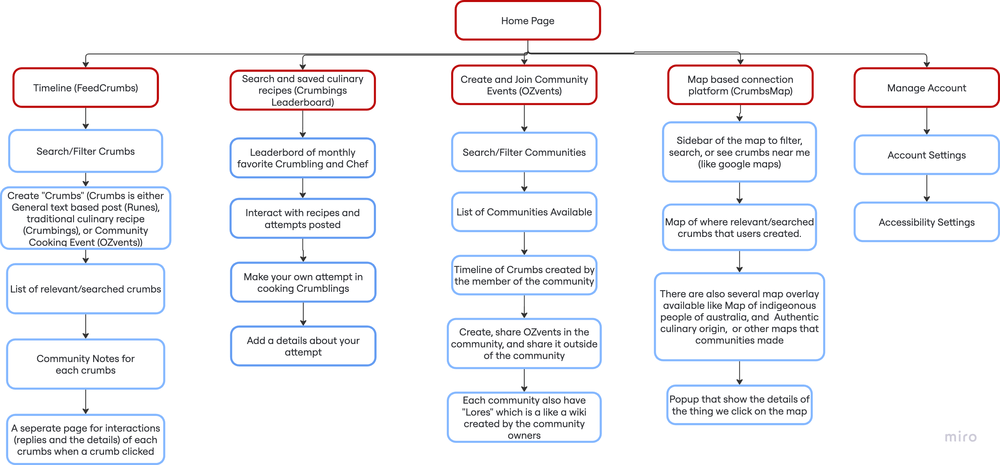

Sitemap for the "FeedCrumbs" project
Below is the sitemap for my project, "FeedCrumbs". This sitemap outlines the structure and organization of the website.
Annotations for each page in the sitemap
This is my annotation for my website sitemap implementation. This section is to show how the sitemap relates to the client goals, values, user needs, and user stories. Each annotations also includes the describe the purpose, features, functionality, and accessibility considerations of each page.
The home page is the landing page of the website. This page is designed to
provide a brief overview of the website's purpose and values, and to
encourage users to explore further. The home page is the first page that the
users will see when first accessing this website therefore its important to give
a
short but powerful first impression to the users through this page.
Since this is the also the main entry point of the website, and based on the
user stories which mentioned that messy navigational elements can be a barrier
for users to access the platform, a clear structure
and logical navigations to other pages are important. Therefore several UX/UI
principles such as Gestalt Principles Figure & Ground and Gestalt Principles of
Law of Prägnanz will be heavily implemented, in order to make sure the page is
not cluttered, clean, and also seperations of different section is clearly
visible.
Following the neeeds mentioned in Value 2, users need an easy and
accessible to access resource and the user stories which mentioned that
simple languages and clear instructions are important, the home page will be
adhering to WCAG 3.1.5 (Reading Level), so that the content is easy to read
especially for new users who have no idea about the platform. Additionally,
since potential users mentioned that contrast colors is important
to make the website more accessible, the WCAG 1.4.3 (Contrast) will also be very
much considered, especially in the landing page which might have several images
and texts.
Following the value 4, of Inclusivity and Accessibility, since there might be images/illustration in this part, WCAG 1.1.1 (Non-text Content) and also WCAG 1.4.3 (Contrast) will be adhered to make sure that the images/illustrations has appropriate alternative text, and also enough contrast ratio between the text and background for visually impaired users.
Since there will be several texts and images in this section, WCAG 1.4.4 (Resize text) and WCAG 1.4.3 (Contrast) will also be followed in this section to maintain accessibility for users.
To mitigate ethical risk, a dedicated page called "Ethical Response" is available to explain how the newsletter plugin will be implemented in an ethical way.
"Community Representation" and "Create Meaningful Connections" value that have
been established is designed to so that people can express, share, and connect
with others in their community. Based on User needs 1 and 2 in Value 1, users
and communities need a platform to express their culture through cuisines.
Furthemore, Based on Value 3 "Create Meaningful Connections", users need a
platform to connect with others, and therefore we don't want to limit the
community representation only in a form of a recipe sharing or food related
posts, but also in other forms in order to not limit the way people can express
their community identity and connect with others.
This Crumbs feature is exists to cover those values and needs.
Crumbs is like a tweet in Twitter, or a post in Facebook, but in this case, it
is a way for people to represent their community and connect with others by
sharing general text-based posts, traditional cuisines
recipes, and/or events such as "Cooking party" or "Traditional
Cooking Lesson of the day".
Inspired by a user story from Johnny, a gamification of the features can
helpful to support the ease of usage. Therefore elements in "Crumbs" has terms
that
make it easier for people to remember and understand.
Crumbs can be three types, a general text-based post like
Reddit/Twitter, Traditional Cuisine Recipe or attempted recipe sharing posts,
and a Community Event Promotion.
text-based posts are called Runes, community events are called OZvents
(pronounced "Ozzeevents"), and traditional cuisine recipes are called
crumblings.
Based on the user stories, since the potential users needs ease of use and
accesible applications, The Crumbs page is designed to be user-friendly and
accessible to all users,
thorugh beginner friendly guides and accessibility considerations. For first
time users, a step by step guideline/tutorial will be shown to help them
understand how to navigate and utilize this page.
The top part of the crubms page is a search and filter feature.
This feature is created to make it easier for user to find relevant
crumbs based on their preferences.
As the search bar is actually a form input and to adhere to WCAG 3.3.2
(Labels and Instructions), Labels and Instructions regarding what
is required to fill will be made visible to the users.
The list of crumbs (FeedCrumbs) is the main content of this Crumbs. It
shows the
list of relevant crumbs based on the user's search and filter
preferences.
Each crumbs will show the author, a "tag" that showing their community
representation, and profile image, main title of the crumb, and the
content (in short) of the crumb.
In order to mitigate an ethical risk of cultural misunderstanding, each
crumbs will also
be supported with Community Note (like X), so that each user can give
a context if something is unclear or misunderstood (ACS Code 2: The
Enhancement of Quality of Life).
As each crumbs is different, and may have differet types of
content,
users
can see the detail of each crumbs by clicking on each of crumbs.
Users can
interact such as like, comment, share, and save each crumbs.
for crumblings (traditional cuisine recipe posts), users can
also
rate and "compete" to cook the recipe by sharing their own
version of
the recipe, and will be judged by the number of likes and
comments. This
leaderboard feature
will be made in the the crumblings Leaderboard page.
for OZvents (community event promotion posts), users can create
small
scale events such as
"Traditional Cooking Class session" or "Cultural Dance
Workshop". The
larger scale event creation
will be made in the Communities & OZvents page.
for Runes (general text-based posts), users can like, comment,
and
replies,
and share the post to others, similiar to reddit.
As described in FeedCrumbs, each crumb may have commnunity notes if necessary. Everyone can add community notes, but to improve the quality of community notes, each time a Crumb is flagged as "need to check" by the system, the community representative will be the first to be notified to add a community note.
In order to create crumbs, user can click the floating action button
in the bottom right of the screen. This button will popup a modal with
different forms
based on what we what type of crumbs the user want to create. User can
also
opt to geolocate the crumbs, so that it will shows on the CrumbsMap
Page.
Similiar to search bar, this form input and to adhere to WCAG 3.3.2
(Labels and Instructions), Labels and Instructions regarding what
is required to fill will be made visible to the users.
Also, error identification and suggestions will also be implemented when
filling the different form fields to adhere to WCAG 3.3.1 (Error
Identification)
To mitigate the risk of unathorized personal data collection, appropiate
popup to confirm the user whether to share their location will be
provided,
so that every post that are geolocated will always be consented by the
user.
Based on all all the interviewee response, Food especially traditional cuisines,
without a doubt is one thing in common that can help people connect with their
community, or even others. Resonated by the user stories, food is one of the
things that people can easily relate to, and subsquently acts as a form of
cultural expression. Furtheremore, this is also resonated in the user needs in
Value 1 and 3, more
specifically, users wants to express their culture through cuisines, and also a
platform to connect with others.
Based on the user stories, some interviewee especially non-native Australians
want to learn about the Australian traditional cuisines, and also want to share
their own traditional cuisines. This acts as an opportunity to create
connections, and therefore the crumblings page is created to answer these needs.
Referring back to user stories, an interviewee mentioned that a gamified
platform can help to make the platform more engaging and fun to use. Therefore,
A harmless gamification is created in order to encourage users to create and
share their crumblings (traditional cuisines), and also their "attempt" to cook
those crumblings. It works this way, Community can create their own crumblings
recipe, based on the community representation itself. Then, other users
can try to cook the recipe, and share their attempt by posting a photo of
their cooked recipe, along with their experience and story about the recipe.
There will be two leaderboard, the crumblings that has the most cooked attempts,
and also the user that has the most reviewed and cooked attempts (Called
Chef). As imagined, each of these crumblings attempts can be interacted,
commented, and shared.
As described, since this page will be content heavy, Gestalt Principles of
Common
Regions will be implemented, to make sure different/same group of contents are
easily identified by the user.
This feature is made to gamify recipe sharing and therefore encourage
more participations by showing the popular crumblings and most active
chefs.
This feature functions ranking system is showing two list, top
crumblings by the total number of attempts and interactions. And the
second is the most active "chefs".
As one of the user needs number 3 in Value 3 mentions, users wants to
share "contents"
and receive feedbacks. Therefore,
This leaderboard served as a motivation and a "reward" feedbackfor users
to create both
crumblings and attempts, and therefore increase the engagement of the
platform.
For accessibility considerations, the leaderboard will adhere to Resize
text (WCAG 1.4.4) so that users with visual impairments can still see
the leaderboards.
Also, for ethical considerations, leaderboard will reset every month to
give
new users equal opportunity (prevent user dominance). But, to appreciate
top monthly chefs, top chefs will received badges that can be displayed
in their profile.
This section is the main content of this page. As described above, users are both encouraged to create their own crumblings, and also attempts other people's crumblings recipes. Therefore, this section will showcase the list of crumblings recipes created and also the attempts made by the users, therefore users can easily choose specific posts to engage and interact with other users through the crumblings and attempts posts.
This feature is made so that people can interact with
crumblings and attempts, such as like, comments, and give
ratings. Other than interacting with the recipes, users can also
interact with attempts posted. The number of like, reviews,
ratings, will
be counted and generalized, and will be affected to the
leaderboard.
Similiar to interactions in FeedCrumbs, especially
in runes, in order to mitigate the risk of any misunderstanding,
community notes will be available to make sure that the contents
are accurate and respectful.
This feature is the one of the main feature of this page. This feature
is made so that users can create their own attempt in cooking a
crumblings recipe made by any communities. This "attempt" is also
counted as crumblings, and acts
just like another crumbs (will show in FeedCrumbs!).
For ethical considerations, the community representatives can
remove someones attempts, if the attempt is innapropriate and
disrespect a certain community.
As shown in the user needs numnber 2 in value 2, users need a
beginner and friendly guides to learn materials. Therefore, this
feature supports adding a
contents such as video, photo, texts based story, in order to
make the users
can share their experience when cooking the recipe more
engagingly to the users, and therefore easier to understand and
follow.
Since this feature suppport contents such photo upload, we will
adhere
to WCAG (WCAG 1.1.1), and inform users to add alternative text
for
non-text contents such as images.
Regarding Community mentioned in Value 1 we established, "Community
Representation" is not only about the people or cuisines, but also
the places that hold them. Historically important cultural cuisines, sites,
areas, and landmarks. Additionally As shown in the user stories, some
interviewee mentioned
not only that they want to learn about the Australian traditional cuisines, but
they also want to learn more about other aspects of the culture.
origin
One of the value and user needs we established is users need an easy and
accessible to access resource. A curated,
location based information platform that is informative and educational will be
very useful to fulfill the needs of a intuitive and easy platform to learn about
diverse cuisines and cultural communities in Australia,
especially for people who may
have not have a general idea of the diverse cultural communities in Australia.
The CrumbsMap is created in order to stand on this foundations. Users will be
able to see geotagged crumbs in a map interface to explore and learn the
location based informations. Furtheremore, this map will also be equipped with
curated overlay layers such as Indigenous lands, historical places, culinary
places, and other relevant places that holds value to the
cultural communities in Australia. The map will be equipped with interactive
Sidebar (similiar to Google Maps), the geolocated crumbs, informative overlay
layers, and also the details of each crumbs. Therefore, users can connect with
the communities and people through a geolocated Rune, OZvent, or crumblings
Similiar with the CrumbsFeed Page, this page is also designed to be the Gestalt
Principles of Common Regions will be very implemented to make sure
different/same group of contents are easily identified by the user.
Simliar to the Crumbs page, For first time users, a step by step
guideline/tutorial will be shown to help them understand how to
navigate and utilize this page.
This feature purpose purpose is to make users can filter, search and
also navigate. This sidebar also used to control the map, such as
changing
basemaps, overalys, etc. Example of the usage of this sidebar is to look
for
OZvents near me, so that I can join and learn Cultural Community Events.
Since there are inputs in this sidebar, we will adhere to WCAG 3.3.2
(Labels and Instructions), Labels and Instructions regarding what
is required to fill will be made visible to the users. And also we will
have to adhere to
WCAG 1.4.3 (Contrast minimum) since the map can be vary in color, we
will have to make sure the
sidebar is always have a contrast with the map.
This is the main content of this page, the actual map interface. There
are
three types of layers, the basemap (like Google Sattelite or
OpenStreetMap) for
the base layer, the overlay layers (like Indigenous lands, historical
sites,
culinary origins, etc) and finally the geolocated crumbs generated by
the users.
Similiar to the sidebar, we will have to adhere to WCAG 1.4.3 (Contrast
minimum) since the map can be vary in color, we
will have to make sure the map is contrast with the rest of the contents
on this page.
This feature is used to represent cultural locations/regions on
an
interactive map. Users can explore and learn based on the
overlay
layers.
By default Indigenous lands, historical sites, culinary origins
overlays will be made available to be toggled on and off, so the
users can spesifically see what they want to learn and explore.
Other relevant overlays layers may be added in the future
based on the user feedbacks and needed.
For ethical considerations, the overlays will be made and
curated along with community representatives to make sure the
information is accurate and
respectful.
In addition, similar to
Community notes in Crumbs, every overlay layers will always has
a link
to a community note section so That
people can recheck and validate if any information is not
accurate (ACS
Code 2: The
Enhancement of Quality of Life).
This feature has the same hierarchy and functionality as the the
overlays layers,
but instead of precreated information, this layer actually
sourced from
the crumbs
generated by users. This feature is mainly a clickable pins in
the map
for each of the crumbs
that the user query. This feature is clickable and when clicked
will
open the details of the crumbs,
which will be explored below.
Similiar to the sidebar, we will have to adhere to WCAG 1.4.3
(Contrast
minimum) since the map can be vary in color, we
will have to make sure the pins is contrast with the map.
Also for ethical considerations, similiar to a normal crumbs,
the
details of each pin
wil be equipped with community notes, mainly by the community
representatives, to prevent misuse such
as marking sensitive area with inappropriate crumbs.
This feature purpose is to visualize the contents of
each crumbs, as
Described by how crumbs created,
it will contain all the contents of the crumbs. The
example use of this
is when a user click a crumb for a
with the type of crumblings, then a recipe, particpants
who cooked the
recipe, comments, origin story of the crumblings, etc
will be shown
in the details.
Specific to the official cureated overlay layers, the
details of each
region/sites will
have to adhere to to reading level of Grade 8 or lower
(WCAG
3.1.5 (Reading Level)), in order to make sure that users
with limited
knowledge especially in english can still understand the
contents.
Same as above, for ethical considerations, community
notes will be
available if necessary to
mitigate the risk of any potential innapropriate
contents.
"Meaningful Connections" specified in value 3, exists when we people like home.
A sense of belonging, and being accepted with people and community around us is
the foundation of creating a "meaningful" connection. Creating and joining
community events is one way to connect. In doing so, this feature is created to
create "homes" for people to join, share, and connect with others in their
community through OZvents.
In accordance with the needs of users to express their own cultural identity and
community, Cultural representation and celebration starts with knowing,
acknowledging, and learning about
the community itself.
The communities and Ozvents page is created to answer these values and needs. A
comprehensive list of communities made by users, and also the OZvents associated
with the communities
will be easily accessible for the the users. Users can create, join, and share
communities and OZvents to connect with others in their community. Additionally,
following the need to a an easy access to
learn from resources, and also the eagerness to learn about the Australian
traditional cultures, a feature called Lores (A simple Wiki for each community),
is created, so that people can learn about the community, their history,
culture, and other relevant information.
To not limit the way people can be a community, there is no definitive "type of
community", it
could be a cultural community, a hobby based community, or even a location based
community. Communities can also create any kind of cooking events or maybe even
just a simple community gatherings, such as "Traditional Cooking Class
session", "Indonesian Cuisine Workshop", or "Chinese Food Lover Meetup".
Above, we also mentioned "Community Representative". This role is made in this
feature. When
a community is created and verified, the creator of the community will be given
the role of Community Representative. This role has the authority to talk on the
FeedCrumbs
representing the community.
Furtheremore, to make sure that the communities page are easy to use and
navigate even though there are many things going on in this page, the
Gestalt Principles of Law of Prägnanz and Common Regions will be implemented in
order to make sure the layout is clean and predictable, and also different/same
group of contents are easily identified by the user.
Simliar to previous pages,
For first
time users, a
step by step guideline/tutorial will be shown to help them understand how to
navigate and utilize this page.
This feature is created to help users easily search and filter
communities by some parameter.
we can search by name, location, and type of community. This feature
functions similiar to searchbar in FeedCrumbs, there will be forms and
inputs
to do search and filters.
Since the search bar is a form input and to adhere to WCAG 3.3.2
(Labels and Instructions), Labels and Instructions regarding what
is required to fill will be made visible to the users.
This feature is created in order to encourage people to explore and
connect with different cultural communities. This page will show
allow users to easily explore and learn about different communities.
The list of communities available is the main content of this page.
There will be like a grid like with the names and images of the
communities, along with the short descriptions of the communities.
This will be a bit similiar to how Facebook groups works, we can see the
click on the communities, and we can see the contents, or even join as a
member in that community.
Specifically for the community page, in order to mitigate the risk
of the creation of innapropriate groups, users and community
representatives can report if there is an innapropriate community that
misrepresents a community or the community, and appropiate actions will
be taken to remove the community if necessary.
Because there will be a grid of colorful cards, WCAG 1.4.3 (contrast) is
important to make sure
the cards always have good contrast with the background and especially
with the texts.
This page is one of the core feature of the community page. This This page hold all the contents related to a specific community. such as the FeedCrumbs inside the community, Lores, and OZvents. Below are the details of each available in this page.
This feature is identical with FeedCrumbs, but the
contents are filtered
by the community that the user opened. This feature
allow users to
express their
ideas for a specific community. The example usecase for
this function is
when a user want to create a OZvents in a community, and
they want to
discuss it
in this community page first before sharing it to
broader audience (Feed
crumbs).\
The ethical risk considerations and mitigations are also
identical with
FeedCrumbs, In order to mitigate an ethical risk of
cultural
misunderstanding, each
crumbs in the community will be supported with Community
Note.
This feature is the one of the main feature of the
Community & OZvents
page.
This feature is created in order to encourage
"connection" within the
community
by creating cultural events. All OZvents created in this
page will be
marked as a
Official Community OZvents, which means that the event
will be
representing the whole community,
instead of a small-scale personal event.
In order to create the Communal OZvents, there will be a
collaborative
page that can be filled by the community members
(similiar to Notion).
This collaborative form made in order to make sure that
the OZvents
created
are relevant and appropriate based on the community
representation.
Users can also
do full scale plannings inside this Create OZvents page,
such as kanban
board,
calendar, and also assign tasks to different members.
All of this are
created in mind so that the process of creating a
community event can be
made easier and more organized.
As imagined, this notion-like page will have many texts,
forms,
collaborative interactive elements and many other
things. Therefore,This
feature will have to adhere to several
WCAG guidelines, such as Contrast (WCAG 1.4.3),Labels
and
Instructions (WCAG 3.3.2), and Error Identification
(WCAG 3.3.1).
"Easy access to commmunity resource" is one the
user needs
that we
identified. Also, as discussed above, knowing
and learning
about the
community is the first step to connect and
represent the
community.
Therefore
this community wiki, called "Lores" is created
to answer
these needs.
Lores will also function similiar to the
notion-like
collaborative page
above. Community representatives can
collaboratively with
other
community
representatives to create and edit the contents
of the
Lores. Basic
community members
can also suggest edits, but the final edit
decision will be
made by the
community representatives. Because every
community is
unique, and may
desribe themself uniquely, communities can
create their
Lores however
they like, a markdown based rich text editor
will be
provided to make it
easier to create and edit the structures and
contents inside
the lores.
Wiki also includes Crumblings (traditional
cuisine recipes).
crumblings
are traditional cuisine recipes
created by communities, so that people can learn
and share
their
attempts at creating it. The details of these
Crumblings
will be
introduced in the Crumblings page below.
This page will adhere to all the WCAG guidelines
in Create,
Share
OZvents. But in addition, a reccommendation
guides will be
provided when
creating Lores, so that the contents are easy to
understand,
and all
complex content will be reccommended to be added
with extra
context to
explain (WCAG 3.1.5).
Personal authentic identity is one of the most important thing in order to
be represented accurately. Resonated by the used needs, users are eager to
express their authentic identity, and therefore this feature is created to
allow users to manage their account and personal information.
This feature is created to allow users to have a centralized place to control
their profile, such as names, profile picture, and bio. in addition, users can
also change accessibility settings, such as text size and contrast to make the
platform more accessible and comfortable to use for them.
All of the content in this feature will have to adhere to ACS Code 1 (Primacy of
the public interest) and ACS Code 3 (Honesty). Users personal data will always
be encrypted
and never be shared to third parties. In addition, users can delete their
account and all of their data will be deleted as well.
In addition, all features in this page must be keyboard navigable (WCAG 2.1.1),
clear labels in forms (WCAG 3.3.2), and also error identification (WCAG 3.3.1).
This feature allow users to manage their personal information, like name, profile pictures, and bio.
this feature is created to allow users to manage their accessibility settings, such as the size of text and constrast.